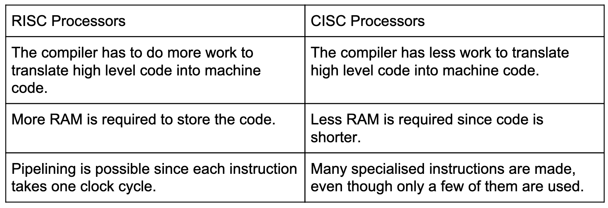
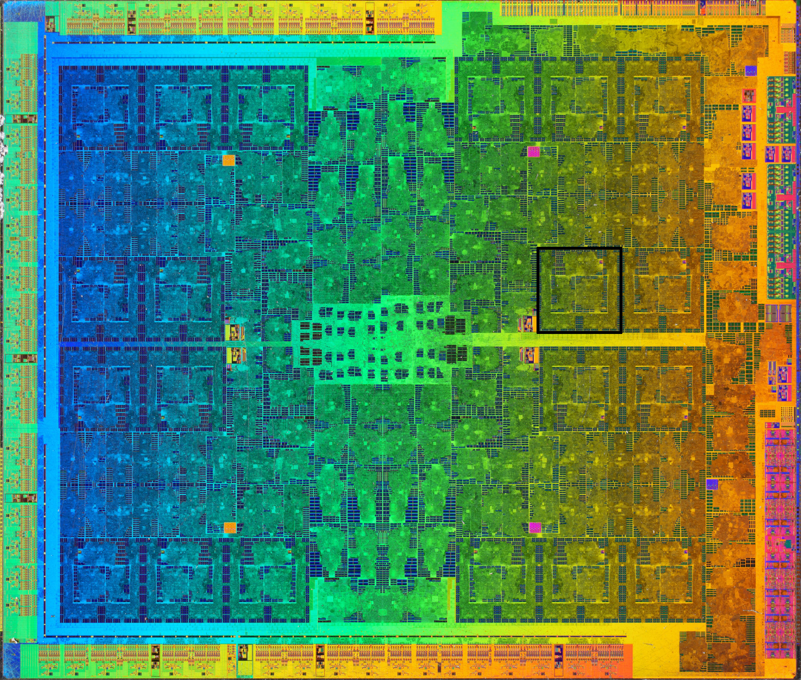

Reduced instruction set computers (RISCs) and complex instruction set computers (CISCs) are two types of processors. As the name implies, RISC has a small set of instructions that the CPU can decode and execute. Each instruction in RISC approximately takes one clock cycle. CISC has a large set of instructions to do more complex tasks. CISC processors are generally more complicated, and some instructions may take multiple clock cycles. The aim of CISC is to execute tasks in as few lines as possible.
The graphical processing unit (GPU) is a device with many small processors which all work in parallel.
Concurrency is the ability of a system to manage multiple processes at the same time.
Different processes can be run on different processors at the same time. This is only possible on a multicore system or multiple processors.
Allotting small timeslots to processes and then quickly switching between them. This gives the illusion that they are happening at the same time. This is possible on both single and multicore systems